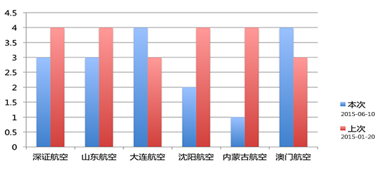

|

| 被评估单位 |
本次评估 |
得分为1的指标 |
上次评估 |
得分为1的指标 |
| 深圳航空 |
3 分 |
1.4 QAR典型超限事件万架次率
1.1 事故征候
2.2.3 重复问题解决
|
4 分 |
1.4 QAR典型超限事件万架次率
|
| 山东航空 |
3 分 |
1.4 QAR典型超限事件万架次率
1.3 一般差错
2.2.3 重复问题解决
|
4 分 |
1.3 一般差错 |
| 大连航空 |
4 分 |
1.3 一般差错 |
3 分 |
1.4 QAR典型超限事件万架次率
1.1 事故征候
|
| 沈阳航空 |
2 分 |
1.4 QAR典型超限事件万架次率
1.1 事故征候
1.3 一般差错
2.2.3 重复问题解决
|
4 分 |
1.3 一般差错 |
| 内蒙古航空 |
1 分 |
1.4 QAR典型超限事件万架次率
1.1 事故征候
1.2 严重差错
1.3 一般差错
2.2.3 重复问题解决
|
4 分 |
1.3 一般差错 |
| 澳门航空 |
4 分 |
1.3 一般差错 |
3 分 |
1.4 QAR典型超限事件万架次率
1.3 一般差错
2.2.3 重复问题解决
|
|
| 1.4 QAR典型超限事件万架次率 |
深圳航空、山东航空、大连航空、沈阳航空、内蒙古航空、澳门航空 |
| 1.1 事故征候 |
深圳航空、山东航空、大连航空、内蒙古航空、澳门航空 |
| 1.3 一般差错 |
深圳航空、山东航空、大连航空、澳门航空 |
| 2.2.3 重复问题解决 |
大连航空、沈阳航空、内蒙古航空、澳门航空 |
| 2.2.4.1 信息 |
山东航空、大连航空、内蒙古航空、澳门航空 |
| 1.2 严重差错 |
深圳航空、沈阳航空、内蒙古航空 |
| 2.1 定期审计 |
沈阳航空、内蒙古航空、澳门航空 |
| 2.2.2 干部状态 |
深圳航空、内蒙古航空、澳门航空 |
| 2.2.4.2 调查 |
深圳航空、沈阳航空、内蒙古航空 |
| 2.2.4.3 检查 |
山东航空、大连航空、澳门航空 |
| 2.2.1 规模和速度 |
沈阳航空、内蒙古航空 |
| 2.2.4.4 QAR |
内蒙古航空、大连航空 |
| 2.2.4.5 例会 |
沈阳航空、大连航空 |
| 2.2.4.6 培训 |
山东航空、内蒙古航空 |
| 2.2.4.7 风险 |
沈阳航空、大连航空 |
| 2.2.4.8 考核体系 |
山东航空、沈阳航空 |
|